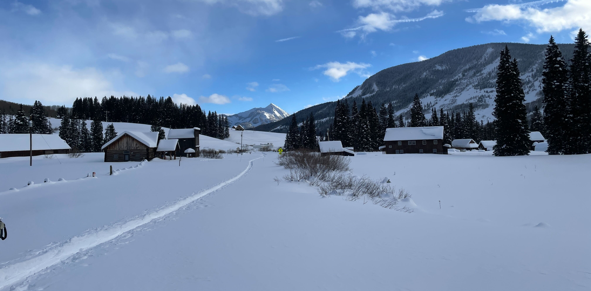

September 2023: Danny Passes his Master's Defense

Congratulations to Danny Hogan for successfully passing his master's defense. His research focuses on how snow sublimation influences snow mass balance, snow energy balance, and thus the accuracy of water forecasting within the Colorado River Basin. Over the past winter, Danny delved into these questions by collecting snow data at the Rocky Mountain Biological Laboratory (RMBL) outside Crested Butte, Colorado. To learn more about Danny's work, please visit the Sublimation of Snow (SOS) project page or the SOS weather blog.
August 2023: Cassie's Research is Featured in the Article "Balancing Fire and Ice"
 Photo by Mark Stone
Photo by Mark Stone
Earlier this month, UW's Department of Civil and Environmental Engineering explored Cassie's research in "Balancing Fire and Ice." It's a great oppurtunity to learn about how Cassie's work on forest-snow interactions could provide key insights for wildfire and water resources management.
July 2023: Data Collection for the SOS Project Concluded

In Gothic Basin, Colorado, researchers from the National Center for Atmospheric Research (NCAR) just finishing diassembling the Sublimation of Snow (SOS) project's remaining field equipment. Take a look at the Aspen Global Change Institute's (AGCI) recent article for more information on the future of the project and the process of field equipment disassembly.
July 2023: "Defining the Danger Zone" is Published
 Illustration by Sarah K. Glaser
Illustration by Sarah K. Glaser
The article "Defining the Danger Zone: Critical Snow Properties for Predator–Prey Interactions" is now live! Click here to read more about how the Mountain Hydrology Research Group and UW's School of Environmental and Forest Sciences measured the impact of snow conditions on predation.
June 2023: Cassie Featured in "Frozen Frontiers: Decoding the Snowpack of the Eastern Cascades"
Recently, Cassie Lumbrazo's research was featured in a 6-minute film produced by University of Washington Media. Give it a watch to learn about Cassie's awesome work on the forest management implications of forest-snow interactions!
May 2023: Steven Passes His PhD Defense

Congratulations to Steven Pestana for successfully defending his PhD dissertation! Steven's research analyzed how geostationary satellites with high temporal resolution can be used to determine snow surface temperatures. The Mountain Hydrology Research Group is proud of Steven's dedication, and we're excited to see what he does next! To learn more about Steven's work, check out the recording of Steven's defense or the Infrared Snow Imaging research page.
May 2023: Welcome Emma and Clinton!

We're excited to add two new graduate students, Emma Boudreau and Clinton Alden, to the group next fall. Emma is from Massachusetts and just finished her B.S. in civil engineering at the University of Massachusetts-Amherst. During undergrad, Emma studied stream discharge in High Mountain Asia using remote sensing techniques and traveled to Northern Alaska to collect field data. She's excited to use these experiences while studying the remote sensing of snow.
Clinton received his B.S. in atmospheric science from the University of Utah. In addition to teaching avalanche and snow courses, he has researched the atmospheric dynamics of Californian atmospheric rivers with the Center for Western Weather and Water Extremes at UC San Diego.
Welcome to the team! We're excited to see where graduate school takes you.
March 2023: Cassie Passes Her PhD General Exam

Congratulations to Cassie Lumbrazo on passing her PhD General Exam! Cassie’s work focuses on forest-snow interactions and how forest management practices implemented to reduce wildfire risk impact snow on the ground. For more details, check out the Forests and Snow research page.
February 2023: Aspen Global Change Institute Article on the SOS Project

Check out Aspen Global Change Institute's article about our ongoing research regarding how snow sublimation in the mountains affects summer stream flows. Even more information on the project can be found at the Mountain Hydrology Research Group's Sublimation of Snow research page or the Sublimation of Snow data page.
February 2023: Applicants are Being Selected for the REU-Blinks Undergraduate Research Program

This summer, Professor Lundquist will be at the Friday Harbor Lab in the San Juan Islands researching the conditions that lead to marine fog. Now that the REU-Blinks Undergraduate Research Program application is closed, two dedicated undergraduates are being selected to help with the research. Over the course of the summer, they'll deploy and analyze data from timelapse cameras, air temperature sensors, and air humidity sensors. Stay tuned to see who will join us this summer to help with the marine fog research! To learn more about the REU-Blinks Undergraduate Research Program, visit the REU-Blinks program webpage; Professor Lundquist's research is labeled #7 on the linked webpage.
January 2023: Eli and Danny Start Field Work at RMBL

Eli and Danny just arrived at the Rocky Mountain Biological Laboratory (RMBL) in Crested Butte, Colorado. For the next few months, they will be collecting data on how snow sublimation impacts snowpack and water availability. Click here for more information on the project.
December 2022: Professor Lundquist is Featured in the 2022 Mountain Views Chronicle
Last month, the 2022 volume of the Mountain Views Chronicle was published with the theme of “research in the extreme.” The Mountain Views Chronicle is an annual journal that showcases the technical and artistic works of researchers focused on mountain topics. In addition to Professor Lundquist’s article “An Extreme Number of Sensors in One Spot,” the 2022 volume contains a variety of insight research, poetry, and art. This 2022 Mountain Views Chronicle can be accessed at this link.
December 2022: Matthew and John Join the Team

Please Welcome Matthew and John to the Mountain Hydrology team! Matthew is a undergraduate in environmental engineering, and he will be maintaining and upgrading the team's website. In his free time, Matthew enjoys backpacking in the Cascades, canoeing in Puget Sound, and playing his banjo. John is an Atmospheric Sciences undergraduate who will work on the Zooniverse Snow Spotter Citizen Science project. On the weekends, you can find him playing cello, backpacking, and skiing. We can’t wait to see how Matthew and John add to the team!